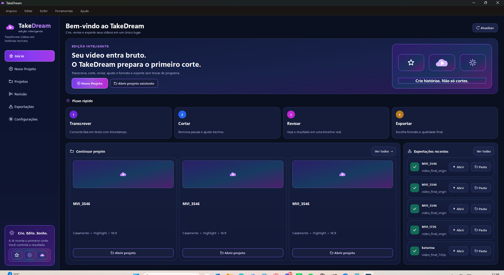
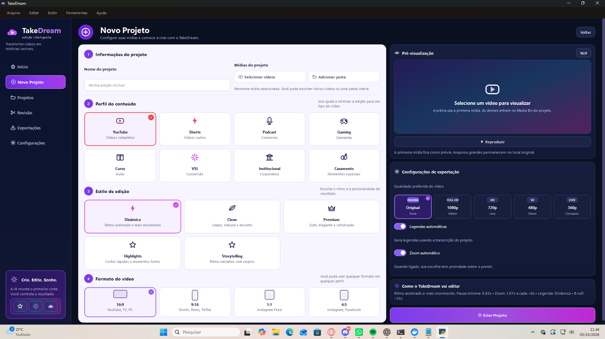
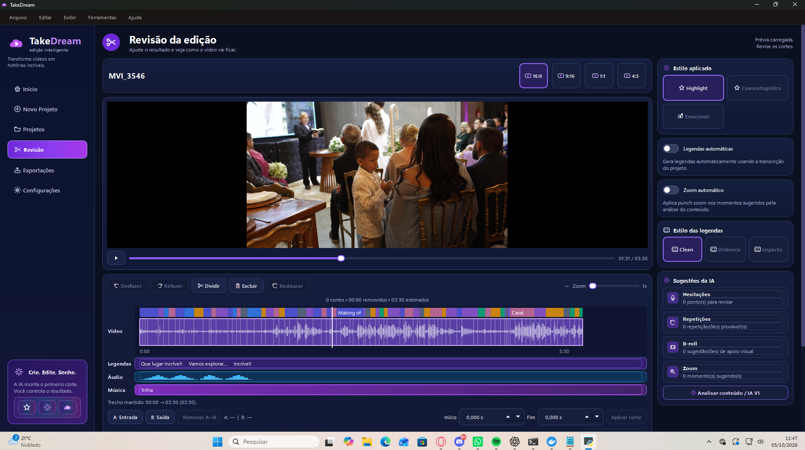
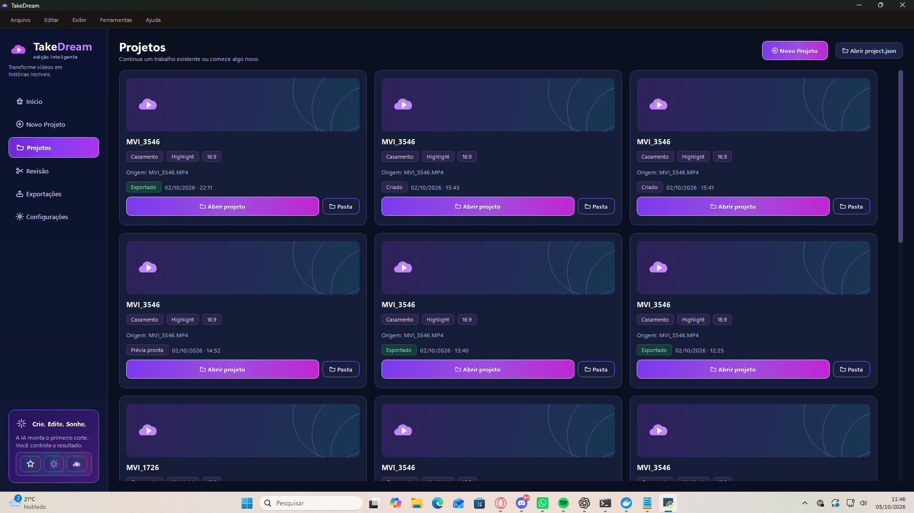
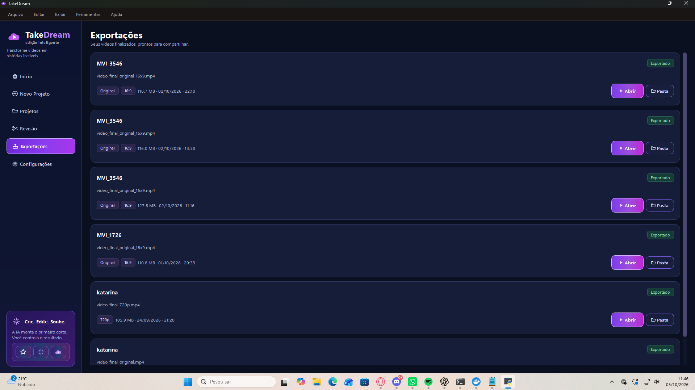
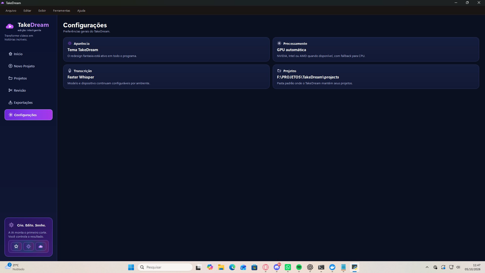

01DESKTOP · INTELIGÊNCIA ARTIFICIAL
TakeDream
Editor desktop com fluxo de edição assistida por IA.
- Problema
- Transcrição, análise de áudio, identificação de pausas e organização do primeiro corte consomem tempo em trabalhos de edição.
- Solução
- Aplicação desktop em Python que reúne importação de mídia, transcrição com timestamps, análise de silêncios, sugestões de edição, revisão em timeline e exportação em um único fluxo.
- Recursos já implementados
- Perfis para YouTube, Shorts, Podcast, Gaming, Curso, VSL, Institucional e Casamento; estilos de edição; formatos 16:9, 9:16, 1:1 e 4:5; legendas automáticas; zoom automático; revisão com player e timeline; histórico de projetos e exportações.
GitHub público ↗Aplicação desktop em desenvolvimento
TAKEDREAM / INTERFACE REAL Toque ou clique para ampliar





